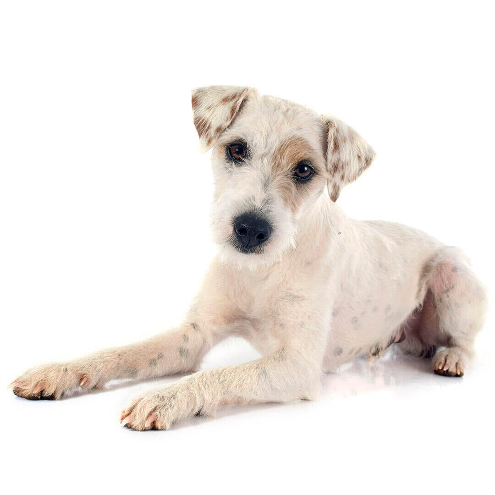

El Parson russell es un Terrier relativamente pequeño, muy activo y jovial. Tiene unas patas bastante largas, que le permiten seguir el ritmo de los caballos, pero su cuerpo está moldeado de forma que puede meterse en espacios pequeños. Suele ser completamente blanco o sobre todo blanco, con manchas de color canela, amarillas o negras (que suelen observarse en la cabeza o en la cola). Los machos adultos miden alrededor de 36 cm y las hembras, 33cm. Pesan entre 5 y 8 kg.
En general, los parsons son perros afables, fieles y cariñosos, con mucha personalidad. Son unas mascotas ideales para una familia activa y deben sociabilizar desde una edad temprana, sobre todo con los gatos y con otros perros. Los aficionados a la jardinería pronto verán de que cavar es uno de los pasatiempos preferidos de estos perros.
El parson jack russell se desarrolló y se estableció en el siglo XVIII en el condado británico de Devon gracias al reverendo John Russell. John Russell nació en 1795 en el seno de una familia muy aficionada a la caza del zorro. Quería un perro que pudiera seguir el ritmo de los caballos, que corriera con los sabuesos y fuera lo bastante pequeño para sacar a los zorros de sus madrigueras. Mientras estudiaba en Oxford, encontró al perro perfecto para su objetivo y se lo compró a su dueño, un lechero de la zona. Se cree que ese fue el primer perro conocido como jack russell. Durante sus años como clérigo, John Russell se dedicó tanto a la Iglesia como a la cría de terriers adecuados para la caza del zorro.
